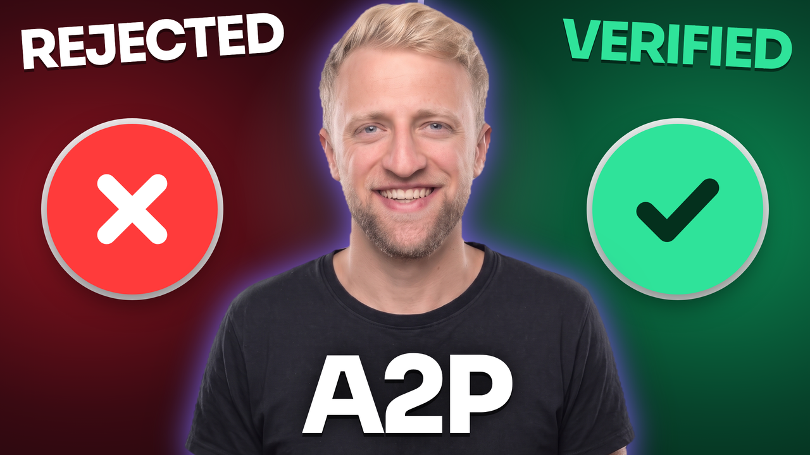
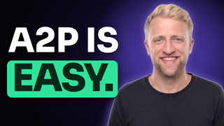
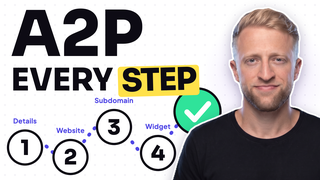
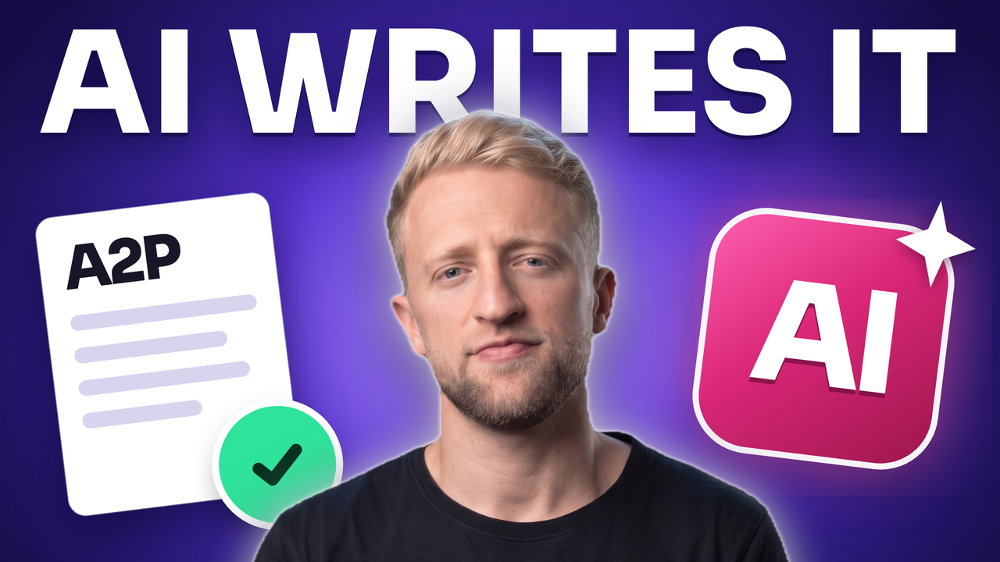

A2P thumbnails, version 4: your approved faces
Wed Nov 25. The faces you approved in round 2 (your versions 2, 9 and 10), with the dark rings under the eyes reduced and the shoulders complete. The face is smaller than this morning: about 36 percent of the frame height. Upload 1, 2 and 3 into the YouTube thumbnail test.
My pick1. Rejected to Verified

search size and sidebar size
REJECTED VERIFIED
Download thumbnail 12. A2P is easy

search size and sidebar sizeA2P IS EASY.
Download thumbnail 23. The map

search size and sidebar sizeA2P EVERY STEP
Download thumbnail 3Spare4. AI writes it

search size and sidebar size
AI WRITES IT
Download thumbnail 4